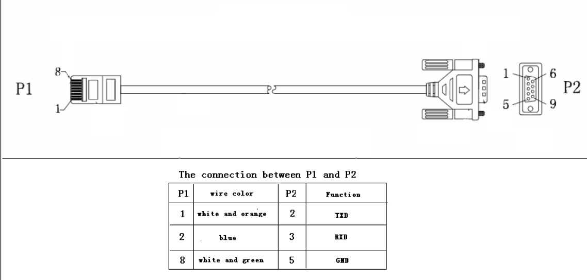

PI30MAX - MAX Communication Protocol¶
Document Details¶
Source:
Implemented in protocol: PI30MAX | PI30 with model: MAX
- 1 Communication format
1.1 RS232
- 2 Inquiry Command
2.1 QPI<cr>: Device Protocol ID Inquiry
2.2 QID<cr>: The device serial number inquiry
2.3 QSID<cr>: The device serial number inquiry (the length is more than 14)
2.4 QVFW<cr>: Main CPU Firmware version inquiry
2.5 QVFW3<cr>: Another CPU (remote panel) Firmware version inquiry
2.6 VERFW:<cr>: Bluetooth version inquiry
2.7 QPIRI<cr>: Device Rating Information inquiry
2.8 QFLAG<cr>: Device flag status inquiry
2.9 QPIGS<cr>: Device general status parameters inquiry
2.10 QPIGS2<cr>: Device general status parameters inquiry (Only 48V model)
2.11 QPGSn<cr>: Parallel Information inquiry (Only 48V model)
2.12 QMOD<cr>: Device Mode inquiry
2.13 QPIWS<cr>: Device Warning Status inquiry
2.14 QDI<cr>: The default setting value information
2.15 QMCHGCR<cr>: Enquiry selectable value about max charging current
2.16 QMUCHGCR<cr>: Enquiry selectable value about max utility charging current
2.17 QOPPT<cr>: The device output source priority time order inquiry
2.18 QCHPT<cr>: The device charger source priority time order inquiry
2.19 QT<cr>: Time inquiry
2.20 QBEQI<cr>: Battery equalization status parameters inquiry
2.21 QMN<cr>: Query model name
2.22 QGMN<cr>: Query general model name
2.23 QET<CRC><cr>: Query total PV generated energy
2.24 QEYyyyy<CRC><cr>: Query PV generated energy of year
2.25 QEMyyyymm<CRC><cr>: Query PV generated energy of month
2 .26 QEDyyyymmdd<CRC><cr>: Query PV generated energy of day
2.27 QLT<CRC><cr>: Query total output load energy
2.28 QLYyyyy<CRC><cr>: Query output load energy of year
2.29 QLMyyyymm<CRC><cr>: Query output load energy of month
2.30 QLDyyyymmdd<CRC><cr>: Query output load energy of day
2.31 QBMS<CRC><cr>: BMS message
2.32 PBMS<CRC><cr>: BMS message
2.33 QLED<cr>: LED status parameters inquiry
- 3 Setting parameters Command
3.1 ATE1<CRC><cr>: Start ATE test, remote panel stop polling
3.2 ATE0: End ATE test, remote panel polling
3.3 PE<X> / PD<X><cr>: Setting some status enable/disable
3.4 PF<cr>: Setting control parameter to default value
3.5 MNCHGC<mnnn><cr>: Setting max charging current
3.6 MUCHGC<mnn><cr>: Setting utility max charging current
3.7 F<nn><cr>: Setting Inverter output rating frequency
3.8 V<nnn><cr>: Setting device output rating voltage
3.9 POP<NN><cr>: Setting device output source priority
3.10 PBCV<nn.n><cr>: Set battery re-charge voltage
3.11 PBDV<nn.n><cr>: Set battery re-discharge voltage
3.12 PCP<NN><cr>: Setting device charger priority
3.13 PGR<NN><cr>: Setting device grid working range
3.14 PBT<NN><cr>: Setting battery type
3.15 POPM<nn ><cr>: Set output mode
3.16 PPCP<MNN><cr>: Setting parallel device charger priority
3.17 PSDV<nn.n><cr>: Setting battery cut-off voltage (Battery under voltage)
3.18 PCVV<nn.n><cr>: Setting battery C.V. (constant voltage) charging voltage
3.19 PBFT<nn.n><cr>: Setting battery float charging voltage
3.20 RTEY<cr>: Reset all stored data for PV/load energy
3.21 RTDL<cr>: Erase all data log
3.22 PBEQE<n><cr>: Enable or disable battery equalization
3.23 PBEQT<nnn><cr>: Set battery equalization time
3.24 PBEQP<nnn><cr>: Set battery equalization period
3.25 PBEQV<nn.nn><cr>: Set battery equalization voltage
3.26 PBEQOT<nnn><cr>: Set battery equalization over time
3.27 PBEQA<n><cr>: Active or inactive battery equalization now
3.28 PCVT<nnn><cr>: Setting max charging time at C.V stage
3.29 DAT< YYMMDDHHMMSS><cr>: Date and time
3.30 PBATCD<abc><cr>: Battery charge/discharge controlling command
3.31 PBATMAXDISC<nnn><cr>: Setting max discharging current
3.32 PLEDE<n><cr>: Enable/disable LED function
3.33 PLEDS<n><cr>: set LED speed
3.34 PLEDM<n><cr>: set LED effect
3.35 PLEDB<n><cr>: set LED brightness
3.36 PLEDT<n><cr>: set LED total number of colors
3.37 PLEDC<n><aaabbbccc><cr>: set LED color
- 4 Appendix
4.1 CRC calibration method
RJ45 to RS232 cable between computer and device
Communication format¶
Baud rate |
Start bit |
Data bit |
Parity |
Stop Bit |
|---|---|---|---|---|
2400 |
1 |
8 |
N |
1 |
Inquiry Command¶
2.1 QPI<cr>: Device Protocol ID Inquiry¶
QPI<CRC><cr>(PI<NN> <CRC><cr>2.2 QID<cr>: The device serial number inquiry¶
QID <CRC><cr>(XXXXXXXXXXXXXX <CRC><cr>2.3 QSID<cr>: The device serial number inquiry (the length is more than 14)¶
QSID<CRC><cr>(NNXXXXXXXXXXXXXXXXXXXX <CRC><cr>2.4 QVFW<cr>: Main CPU Firmware version inquiry¶
QVFW<CRC><cr>(VERFW:<NNNNN.NN><CRC><cr>QVFW<CRC><cr>(VERFW:00123.01<CRC><cr>2.5 QVFW3<cr>: Another CPU (remote panel) Firmware version inquiry¶
QVFW3<CRC><cr>(VERFW: <NNNNN.NN><CRC><cr>2.6 VERFW:<cr>: Bluetooth version inquiry¶
VERFW:<CRC><cr>(VERFW: <NNNNN.NN><cr>2.7 QPIRI<cr>: Device Rating Information inquiry¶
QPIRI<CRC><cr>(BBB.B CC.C DDD.D EE.E FF.F HHHH IIII JJ.J KK.K JJ.J KK.K LL.L O PP QQQ O P Q R SS T U VV.V W X YYY Z CCC <CRC><cr>Component |
Description |
Units |
Notes |
|
|---|---|---|---|---|
A |
( |
Start byte |
||
B |
BBB.B |
Grid rating voltage |
V |
B is an integer ranging from 0 to 9. |
C |
CC.C |
Grid rating current |
A |
C is an Integer ranging from 0 to 9. |
D |
DDD.D |
AC output rating voltage |
V |
D is an Integer ranging from 0 to 9. |
E |
EE.E |
AC output rating frequency |
Hz |
E is an Integer ranging from 0 to 9. |
F |
FF.F |
AC output rating current |
A |
F is an Integer ranging from 0 to 9. |
H |
HHHH |
AC output rating apparent power |
VA |
H is an Integer ranging from 0 to 9. |
I |
IIII |
AC output rating active power |
W |
I is an Integer ranging from 0 to 9. |
J |
JJ.J |
Battery rating voltage |
V |
J is an Integer ranging from 0 to 9. |
K |
KK.K |
Battery re-charge voltage |
V |
K is an Integer ranging from 0 to 9. |
l |
JJ.J |
Battery under voltage |
V |
J is an Integer ranging from 0 to 9. |
M |
KK.K |
Battery bulk voltage |
V |
K is an Integer ranging from 0 to 9. |
N |
LL.L |
Battery float voltage |
V |
L is an Integer ranging from 0 to 9. |
O |
O |
Battery type |
0: AGM
1: Flooded
2: User
3: Pylon
5: Weco
6: Soltaro
8: Lib
9: Lic
|
|
P |
PP |
Max AC charging current |
A |
P is an Integer ranging from 0 to 9. If the max AC charging current is greater than 99A, then return to PPP |
Q |
QQQ |
Max charging current |
A |
Q is an Integer ranging from 0 to 9. |
O |
O |
Input voltage range |
0: Appliance
1: UPS
|
|
P |
P |
Output source priority |
0: UtilitySolarBat
1: SolarUtilityBat
2: SolarBatUtility
|
|
Q |
Q |
Charger source priority |
1: Solar first
2: Solar + Utility
3: Only solar charging permitted
|
|
R |
R |
Parallel max num |
R is an Integer ranging from 0 to 9. |
|
S |
SS |
Machine type |
00: Grid tie
01: Off Grid
10: Hybrid
|
|
T |
T |
Topology |
0: transformerless
1: transformer
|
|
U |
U |
Output mode |
00: single machine output
01: parallel output
02: Phase 1 of 3 Phase output
03: Phase 2 of 3 Phase output
04: Phase 3 of 3 Phase output
05: Phase 1 of 2 Phase output
06: Phase 2 of 2 Phase output (120°)
07: Phase 2 of 2 Phase output (180°)
|
|
V |
VV.V |
Battery re-discharge voltage |
V |
V is an Integer ranging from 0 to 9. |
W |
W |
PV OK condition for parallel |
0: As long as one unit of inverters has connect PV, parallel system will consider PV OK
1: Only All of inverters have connect PV, parallel system will consider PV OK
|
|
X |
X |
PV power balance |
0: PV input max current will be the max charged current
1: PV input max power will be the sum of the max charged power and loads power.
|
|
Y |
YYY |
Max. charging time at C.V stage (only 48 V model) |
min |
Y is an Integer ranging from 0 to 9. |
Z |
Z |
Operation Logic (only 48V model) |
0: Automatically
1: On-line mode
2: ECO mode
|
|
A1 |
CCC |
Max discharging current (only 48V model) |
A |
C is an integer ranging from 0 to 9. |
2.8 QFLAG<cr>: Device flag status inquiry¶
QFLAG <CRC><cr>(ExxxDxxx <CRC><cr>ExxxDxxx is the flag status. E means enable, D means disablex |
Control setting |
|---|---|
a |
Enable/disable silence buzzer or open buzzer |
b |
Enable/Disable overload bypass function |
d |
Enable/Disable solar feed to grid (reserved feature) |
k |
Enable/Disable LCD display escape to default page after 1min timeout |
u |
Enable/Disable overload restart |
v |
Enable/Disable over temperature restart |
x |
Enable/Disable backlight on |
y |
Enable/Disable alarm on when primary source interrupt |
z |
Enable/Disable fault code record |
2.9 QPIGS<cr>: Device general status parameters inquiry¶
QPIGS <CRC><cr>(BBB.B CC.C DDD.D EE.E FFFF GGGG HHH III JJ.JJ KKK OOO TTTT EE.E UUU.U WW.WW PPPPP b7b6b5b4b3b2b1b0 QQ VV MMMMM b10b9b8 Y ZZ AAAA <CRC><cr>i |
Component |
Description |
Units |
Notes |
|---|---|---|---|---|
a |
( |
Start byte |
||
b |
BBB.B |
Grid voltage |
V |
B is an Integer number 0 to 9. |
C |
CC.C |
Grid frequency |
Hz |
C is an Integer number 0 to 9. |
D |
DDD.D |
AC output voltage |
V |
D is an Integer number 0 to 9. |
E |
EE.E |
AC output frequency |
Hz |
E is an Integer number from 0 to 9. |
F |
FFFF |
AC output apparent power |
VA |
F is an Integer number from 0 to 9. |
G |
GGGG |
AC output active power |
W |
G is an Integer ranging from 0 to 9. |
H |
HHH |
Output load percent |
% |
DEVICE: HHH is Maximum of W% or VA%.
VA% is a percent of apparent power.
W% is a percent of active power.
|
I |
III |
BUS voltage |
V |
I is an Integer ranging from 0 to 9. |
j |
JJ.JJ |
Battery voltage |
V |
J is an Integer ranging from 0 to 9. |
k |
KK |
K Battery charging current |
A |
K is an Integer ranging from 0 to 9. |
o |
OOO |
Battery capacity |
% |
O is an Integer ranging from 0 to 9. |
P |
TTTT |
Inverter heat sink temperature |
°C |
T is an integer ranging from 0 to 9. NTC A/D value for Axpert 1~3K |
r |
EE.E |
PV 1 Input current |
A |
E is an Integer ranging from 0 to 9. |
t |
UUU.U |
PV 1 Input voltage |
V |
U is an Integer ranging from 0 to 9. |
u |
WW.WW |
Battery voltage from SCC |
V |
W is an Integer ranging from 0 to 9. |
w |
PPPPP |
Battery discharge current |
A |
P is an Integer ranging from 0 to 9. |
x |
b7b6b5b b3b2b1b |
Device status |
b7: add SBU priority version, 1: yes,0: no
b6: configuration status: 1: Change 0: unchanged
b5: SCC firmware version 1: Updated 0: unchanged
b4: Load status: 0: Load off 1:Load on
b3: battery voltage to steady while charging
b2: Charging status
b1: Charging status(SCC charging on/off)
b0: Charging status(AC charging on/off)
b2b1b0:
000: Do nothing
110: Charging on with SCC charge on
101: Charging on with AC charge on
111: Charging on with SCC and AC charge on
|
|
y |
Battery voltage offset for fans on |
10mV |
Q is an Integer ranging from 0 to 9. |
|
z |
VV |
EEPROM version |
V is an Integer ranging from 0 to 9. |
|
MMMM |
PV 1 Charging power |
W |
M is an Integer ranging from 0 to 9. |
|
b10b9b8 |
Device status |
b10: flag for charging to floating mode
b9: Switch On
b8: flag for dustproof installed(1-dustproof installed,0-no dustproof, only available for Axpert V series)
|
||
Y |
Solar feed to grid status (reserved feature) |
0: normal
1: solar feed to grid
|
||
ZZ |
Set country customized regulation (reserved feature) |
00: India
01: Germany
02: South America
|
||
AAAA |
Solar feed to grid power (reserved feature) |
W |
A is an Integer ranging from 0 to 9. |
2.10 QPIGS2<cr>: Device general status parameters inquiry (Only 48V model)¶
QPIGS2 <CRC><cr>(BB.B CCC.C DDDDD <CRC><cr>i |
Component |
Description |
Units |
Notes |
|---|---|---|---|---|
a |
( |
Start byte |
||
b |
BB.B |
PV2 Input current |
A |
E is an Integer ranging from 0 to 9. |
c |
CCC.C |
PV2 Input voltage |
V |
U is an Integer ranging from 0 to 9. |
d |
DDDDD |
PV2 Charging power |
W |
M is an Integer ranging from 0 to 9. |
2.11 QPGSn<cr>: Parallel Information inquiry (Only 48V model)¶
QPGSn<CRC><cr>; n is parallel machine number.(A BBBBBBBBBBBBBB C DD EEE.E FF.FF GGG.G HH.HH IIII JJJJ KKK LL.L MMM NNN OOO.O PPP QQQQQ RRRRR SSS b7b6b5b4b3b2b1b0 T U VVV WWW ZZ XX YYY OOO.O XX<CRC><cr>i |
Component |
Description |
Units |
Notes |
|
|---|---|---|---|---|---|
A |
( |
Start byte |
|||
B |
A |
Whether the parallel num |
0 ：No exist
1 ：Exist.
|
||
C |
BBBBBBBBBBBBBB |
Serial number |
B is an Integer ranging from 0 to 9. |
||
D |
C |
Work mode |
C is an character |
refer to QMOD |
|
E |
DD |
Fault code |
D is an Integer ranging from 0 to 9. |
||
F |
EEE.E |
Grid voltage |
V |
E is an Integer ranging from 0 to 9. |
|
G |
FF.FF |
Grid frequency |
Hz |
F is an Integer ranging from 0 to 9. |
|
H |
GGG.G |
AC output voltage |
V |
G is an Integer ranging from^ 0 to 9. |
|
I |
HH.HH |
AC output frequency |
Hz |
H is an Integer ranging from 0 to 9. |
|
J |
IIII |
AC output apparent power |
VA |
I is an Integer number from 0 to 9. |
|
K |
JJJJ |
AC output active power |
W |
J is an Integer ranging from 0 to 9. |
|
L |
KKK |
Load percentage |
% |
K is an Integer ranging from 0 to 9. |
|
M |
LL.L |
Battery voltage |
V |
L is an Integer ranging from 0 to 9. |
|
N |
MMM |
Battery charging current |
A |
M is an Integer ranging from 0 to 9. |
|
O |
NNN |
Battery capacity |
% |
N is an Integer ranging from 0 to 9. |
|
P |
OOO.O |
PV 1 Input Voltage |
V |
O is an Integer ranging from 0 to 9. |
|
Q |
PPP |
Total charging current |
A |
P is an Integer ranging from 0 to 9. |
|
R |
QQQQQ |
Total AC output apparent power |
VA |
Q is an Integer ranging from 0 to 9. |
|
S |
RRRRR |
Total output active power |
W |
R is an Integer ranging from 0 to 9. |
|
T |
SSS |
Total AC output percentage |
% |
S is an Integer ranging from 0 to 9. |
|
U |
b7b6b5b4b3b2b1b0 |
Inverter Status |
b7: 1 SCC OK, 0 SCC LOSS
b6: 1 AC Charging, 0 AC no charging
b5: 1 SCC Charging, 0 SCC no charging
b4b3: 2 battery open, 1 battery under, 0 battery normal
b2: 1 Line loss, 0 Line ok
b1: 1 load on, 0 load off
b0: configuration status: 1: Change 0: unchanged
|
||
V |
T |
Output mode |
0: single machine
1: parallel output
2: Phase 1 of 3 phase output
3: Phase 2 of 3 phase output
4: Phase 3 of 3 phase output
5: Phase 1 of 2 Phase output
6: Phase 2 of 2 Phase output (120°)
7: Phase 2 of 2 Phase output (180°)
|
||
W |
U |
Charger source priority |
0: Utility first
1: Solar first
2: Solar + Utility
3: Solar only
|
||
X |
VVV |
Max charger current |
A |
V is an Integer ranging from 0 to 9. |
|
Y |
WWW |
Max charger range |
A |
W is an Integer ranging from 0 to 9. |
|
Z |
ZZ |
Max AC charger current |
A |
Z is an Integer ranging from 0 to 9. If the max AC charging current is greater than 99A |
then return to ZZZ |
a |
XX |
PV 1 input current |
A |
X is an Integer ranging from 0 to 9. |
|
b |
YYY |
Battery discharge current |
A |
Y is an Integer ranging from 0 to 9. |
|
c |
OOO.O |
PV 2 input voltage |
V |
O is an Integer ranging from 0 to 9. |
|
d |
XX |
PV2 input current |
A |
X is an Integer ranging from 0 to 9. |
Fault Code |
Fault Event |
|---|---|
01 |
Fan is locked when inverter is off. |
02 |
Over temperature |
03 |
Battery voltage is too high |
04 |
Battery voltage is too low |
05 |
Output short circuited. |
06 |
Output voltage is too high. |
07 |
Overload time out |
08 |
Bus voltage is too high |
09 |
Bus soft start failed |
10 |
PV over current |
11 |
PV over voltage |
12 |
DCDC over current |
13 |
Battery discharge over current |
51 |
Over current |
52 |
Bus voltage is too low |
53 |
Inverter soft start failed |
55 |
Over DC voltage in AC output |
57 |
Current sensor failed |
58 |
Output voltage is too low |
60 |
Power feedback protection |
71 |
Firmware version inconsistent |
72 |
Current sharing fault |
80 |
CAN fault |
81 |
Host loss |
82 |
Synchronization loss |
83 |
Battery voltage detected different |
84 |
AC input voltage and frequency detected different |
85 |
AC output current unbalance |
86 |
AC output mode setting is different |
2.12 QMOD<cr>: Device Mode inquiry¶
QMOD<CRC><cr>(M<CRC><cr>Code(M) |
Notes |
|---|---|
P |
Power on mode |
S |
Standby mode |
L |
Line mode |
B |
Battery mode |
F |
Fault mode |
D |
Shutdown mode |
QMOD<CRC><cr>(L<CRC><cr>2.13 QPIWS<cr>: Device Warning Status inquiry¶
QPIWS<CRC> <cr>(a0a1.....a 30 a 31 <CRC><cr>bit |
Warning |
Notes |
|
|---|---|---|---|
a0 |
PV loss |
Warning |
|
a1 |
Inverter fault |
Fault |
|
a2 |
Bus Over |
Fault |
|
a3 |
Bus Under |
Fault |
|
a4 |
Bus Soft Fail |
Fault |
|
a5 |
LINE_FAIL |
Warning |
|
a6 |
OPVShort |
Fault |
|
a7 |
Inverter voltage too low |
Fault |
|
a8 |
Inverter voltage too high |
Fault |
|
a9 |
Over temperature |
Compile with a1, if a1=1,fault, otherwise warning |
|
a10 |
Fan locked |
Compile with a1, if a1=1,fault, otherwise warning |
|
a11 |
Battery voltage high |
Compile with a1, if a1=1,fault, otherwise warning |
|
a12 |
Battery low alarm |
Warning |
|
a13 |
Reserved |
||
a14 |
Battery under shutdown |
Warning |
|
a15 |
Battery derating |
Warning |
|
a16 |
Over load |
Compile with a1, if a1=1,fault, otherwise warning |
|
a17 |
Eeprom fault |
Warning |
|
a18 |
Inverter Over Current |
Fault |
|
a19 |
Inverter Soft Fail |
Fault |
|
a20 |
Self Test Fail |
Fault |
|
a21 |
OP DC Voltage Over |
Fault |
|
a22 |
Bat Open |
||
a23 |
Current Sensor Fail |
Fault |
|
a24 |
Reserved |
||
a25 |
Reserved |
||
a26 |
Reserved |
||
a27 |
Reserved |
||
a28 |
Reserved |
||
a29 |
Reserved |
||
a30 |
Reserved |
||
a31 |
Battery weak (only 48V model) |
24V model: a31, a32 is fault code |
|
a32 |
Reserved |
48V model: a32, a33 is fault code |
|
a33 |
Reserved |
48V model: a32 |
a33 is fault code |
a34 |
Reserved |
||
a35 |
Battery equalization |
Warning |
2.14 QDI<cr>: The default setting value information¶
QDI<CRC><cr>(BBB.B CC.C 00DD EE.E FF.F GG.G HH.H II J K L M N O P Q R S T U V W YY.Y X Z aaa bbb<CRC><cr>i |
Component |
Description |
Units |
Notes |
Axpert |
|---|---|---|---|---|---|
A |
( |
Start byte |
|||
B |
BBB.B |
AC output voltage |
V |
B is an Integer ranging from 0 to 9. |
Default 230.0 for HV models, 120.0 for LV models |
C |
CC.C |
AC output frequency |
Hz |
C is an Integer ranging from 0 to 9. |
Default 50.0 for HV models, 60.0 for LV models |
D |
00DD |
Max AC charging current |
A |
D is an Integer ranging from 0 to 9. |
Default 0030 |
E |
EE.E |
Battery Under voltage |
V |
E is an Integer ranging from 0 to 9. |
Default 44.0 |
F |
FF.F |
Charging float voltage |
V |
F is an Integer ranging from 0 to 9. |
Default 54.0 |
G |
GG.G |
Charging bulk voltage |
V |
G is an Integer ranging from 0 to 9. |
Default 56.4 |
H |
HH.H |
Battery default re-charge voltage |
V |
H is an Integer ranging from 0 to 9. |
Default 46.0 for HV model |
I |
II |
Max charging current |
A |
I is an Integer ranging from 0 to 9. |
Default 60 for HV model |
J |
J |
AC input voltage range |
J is an Integer ranging from 0 to 1. |
Default 0 for Appliances range |
|
K |
K |
Output source priority |
K is an Integer ranging from 0 to 1. Default 0 for utility first |
||
L |
L |
Charger source priority |
L is an Integer ranging from 1 to 3. |
Default 2 for solar and utility |
|
M |
M |
Battery type |
M is an Integer ranging from 0 to 1. |
Default 0 for AGM |
|
N |
N |
Enable/disable silence buzzer or open buzzer |
N is an Integer ranging from 0 to 1. |
Default 0 for enable buzzer |
|
O |
O |
Enable/Disable power saving |
O is an Integer ranging from 0 to 1. |
Default 0 for disable power saving |
|
P |
P |
Enable/Disable overload restart |
P is an Integer ranging from 0 to 1. |
Default 0 for disable overload restart |
|
Q |
Q |
Enable/Disable over temperature restart |
Q is an Integer ranging from 0 to 1. |
Default 0 for disable over temperature restart |
|
R |
R |
Enable/Disable LCD backlight on |
R is an Integer ranging from 0 to 1. |
Default 1 for enable LCD backlight on |
|
S |
S |
Enable/Disable alarm on when primary source interrupt |
S is an Integer ranging from 0 to 1. |
Default 1 for enable alarm on when primary source interrupt |
|
T |
T |
Enable/Disable fault code record |
T is an Integer ranging from 0 to 1. |
Default 1 for disable fault code record |
|
U |
U |
Overload bypass |
U is an Integer ranging from 0 to 1. |
Default 0 for disable overload bypass function |
|
V |
V |
Enable/Disable LCD display escape to default page after 1min timeout |
V is an Integer ranging from 0 to 1. |
Default 1 for LCD display escape to default page |
|
W |
W |
Output mode |
W is an Integer ranging from 0 to 4. |
Default 0 for single output |
|
Y |
YY.Y |
Battery re-discharge voltage |
V |
W is an Integer ranging from 0 to 9. |
Default 54.0 for HV model |
X |
X |
PV OK condition for parallel |
X is an Integer ranging from 0 to 1 |
0: As long as one unit of inverters has connect PV, parallel system will consider PV OK |
|
Z |
Z |
PV power balance |
X is an Integer ranging from 0 to 1 |
0: PV input max current will be the max charged current |
|
a |
aaa |
Max. charging time at C.V stage(only 48V model) |
a is an Integer ranging from 0 to 9 |
||
b |
bbb |
Max discharging current (only 48V model) |
A |
b is an integer ranging from 0 to 9. |
### 2.15 QMCHGCR<cr>: Enquiry selectable value about max charging current
`
Computer: QMCHGCR<CRC><cr>
Device: (AAA BBB CCC DDD......<CRC><cr>
More value can be added, make sure there is a space character between every value.
`
### 2.16 QMUCHGCR<cr>: Enquiry selectable value about max utility charging current
`
Computer: QMUCHGCR<CRC><cr>
Device: (AAA BBB CCC DDD......<CRC><cr>
More value can be added, make sure there is a space character between every value.
`
### 2.17 QOPPT<cr>: The device output source priority time order inquiry
Computer: QOPPT<CRC><cr> Device: (M M M M M M M M M M M M M M M M M M M M M M M M N O O O<CRC><cr> M: 24 hour correspond to the output source priority (0: Utility first, 1: Solar first, 2: SBU) N: device output source priority O: selection of output source priority order Example: Computer: QOPPT<CRC><cr> Device: (0 0 0 0 0 2 2 0 0 0 0 0 0 0 0 0 0 0 0 0 0 0 0 0 0 0 1 2<CRC><cr> Means: the device output source priority time order is SBU from 5 to 6, and output source priority is Utility first.
### 2.18 QCHPT<cr>: The device charger source priority time order inquiry
Computer: QCHPT<CRC><cr> Device: (M M M M M M M M M M M M M M M M M M M M M M M M N O O O<CRC><cr> M: 24 hour correspond to the charger source priority (1: Solar first, 2: Solar + Utility, 3: Only solar charging permitted)
`
N: device charger source priority
O: selection of o charger source priority order
Example:
`
Computer: QCHPT<CRC><cr> Device: (1 1 1 1 1 1 1 1 1 1 1 1 1 1 1 1 1 1 1 1 2 2 2 2 2 2 1 0<CRC><cr> Means: the device charger source priority time order is solar + utility from 20 to 23, and charger source priority is Solar first.
### 2.19 QT<cr>: Time inquiry
`
Computer: QT<cr>
Device: (YYYYMMDDHHMMSS<cr>
Example:
Computer: QT<cr>
Device: (20180101111120<cr>
Means: The time is 2018/01/01 11:11:20.
Data Description Notes
( Start byte
YYYYMMDD Date Y, M and D are an Integer number 0 to 9.
HHMMSS Time H, M and S are an Integer number 0 to 9.
`
### 2.20 QBEQI<cr>: Battery equalization status parameters inquiry
`
Computer: QBEQI<CRC><cr>
Device: (B CCC DDD EEE FFF GG.GG HHH III J KKKK<CRC><cr>
Data Description Notes
a ( Start byte
b B Enable or Disable
equalization
`
`
B is an Integer number 0 to 1.
`
`
C CCC equalization time C s an Integer number 0 to 9. The unit is
Minute.
D DDD equalization period D is an Integer number 0 to 9. The unit is day.
E EEE equalization max
current
`
`
E is an Integer number from 0 to 9. The unit is
A.
F FFF reserved reserved
G GG.GG equalization voltage G is an Integer ranging from 0 to 9. The units
is V.
H HHH reserved reserved
I III equalization over time I is an Integer ranging from 0 to 9. The unit is
Minute.
j J equalization active
status
`
`
J is an Integer ranging from 0 to 1.
`
`
k KKKK equalization elapse time K is an Integer ranging from 0 to 9. The units
is Hour.
`
### 2.21 QMN<cr>: Query model name
`
Computer: QMN<CRC><cr>
`
Device: (MMMMM-NNNN<CRC><cr> if device accepts this command, otherwise, responds (NAK<cr> MMMMM: model name, NNNN: Rated output VA
### 2.22 QGMN<cr>: Query general model name
`
Computer: QGMN<CRC><cr>
Device: (NNN<CRC><cr> if Inverter accepts this command, otherwise, responds (NAK<cr>
`
### 2.23 QET<CRC><cr>: Query total PV generated energy
`
Computer: QET<CRC><cr>
Device: (NNNNNNNN<CRC><cr>
NNNNNNNN: Generated energy, N: 0~9, unit: Wh
`
### 2.24 QEYyyyy<CRC><cr>: Query PV generated energy of year
`
Computer: QEYyyyy<cr>
Device: (NNNNNNNN<CRC><cr>
yyyy: Year, y: 0~
NNNNNNNN: Generated energy, N: 0~9, unit: Wh
`
### 2.25 QEMyyyymm<CRC><cr>: Query PV generated energy of month
`
Computer: QEMyyyymm <CRC><cr>
Device: (NNNNNNNN<CRC><cr>
yyyy: Year, y: 0~
mm: Month, m: 0~
NNNNNNNN: Generated energy, N: 0~9, unit: Wh
`
### 2 .26 QEDyyyymmdd<CRC><cr>: Query PV generated energy of day
`
Computer: QEDyyyymmdd<CRC><cr>
Device: (NNNNNNNN<CRC><cr>
yyyy: Year, y: 0~
mm: Month, m: 0~
dd: Day, d: 0~
NNNNNNNN: Generated energy, N: 0~9, unit: Wh
`
### 2.27 QLT<CRC><cr>: Query total output load energy
`
Computer: QLT<CRC><cr>
Device: (NNNNNNNN<CRC><cr>
NNNNNNNN: Output load energy, N: 0~9, unit: Wh
`
### 2.28 QLYyyyy<CRC><cr>: Query output load energy of year
`
Computer: QLYyyyy<CRC><cr>
Device: (NNNNNNNN<CRC><cr>
yyyy: Year, y: 0~
NNNNNNNN: Output load energy, N: 0~9, unit: Wh
`
### 2.29 QLMyyyymm<CRC><cr>: Query output load energy of month
`
Computer: QLMyyyymm<CRC><cr>
Device: (NNNNNNNN<CRC><cr>
yyyy: Year, y: 0~
mm: Month, m: 0~
NNNNNNNN: Output load energy, N: 0~9, unit: Wh
`
### 2.30 QLDyyyymmdd<CRC><cr>: Query output load energy of day…………………………………………………..
`
Computer: QLDyyyymmdd<CRC><cr>
Device: (NNNNNNNN<CRC><cr>
yyyy: Year, y: 0~
mm: Month, m: 0~
dd: Day, d: 0~
NNNNNNNN: Output load energy, N: 0~9, unit: Wh
`
### 2.31 QBMS<CRC><cr>: BMS message
`
Computer: QBMS<CRC><cr>
Device: (ACK <CRC><cr>
`
### 2.32 PBMS<CRC><cr>: BMS message
`
Remote box: PBMSa bbb c d e fff ggg hhh iiii jjjj<CRC><cr>
Device: (ACK<CRC><cr>
Data Description Notes
( Start byte
a Battery connect status 0: connect, 1: disconnect.
`
`
bbb Battery percentage b is an Integer ranging from 0 to 9. The units
is %.
`
`
c
Force AC charge battery in
any case
0: Do not force, 1: Force.
`
`
d Battery stop discharge flag 0: Enable discharge, 1: disable discharging
e Battery stop charge flag 0: Enable charge, 1: disable charging
`
`
fff Battery C.V. charging voltage
f is an Integer ranging from 0 to 9. The units
is V.
`
`
ggg
Battery floating charging
voltage
`
`
g is an Integer ranging from 0 to 9. The units
is V.
`
`
hhh Battery cut-off voltage
h is an Integer ranging from 0 to 9. The units
is V.
`
`
iiii
Battery max. charging
current
`
`
i is an Integer ranging from 0 to 9. The units
is A.
`
`
jjjj
Battery max. discharging
current
`
`
j is an Integer ranging from 0 to 9. The units
is A.
`
### 2.33 QLED<cr>: LED status parameters inquiry
`
Computer: QLED<cr>
UPS: (A B C D E aaa1bbb1ccc1 aaa 2 bbb 2 ccc 2 (aaa 3 bbb 3 ccc3)<cr>
Item Data description Notes
a ( Start code
b A Enable or Disable A is an Integer number 0 to 1.
`
`
c B LED speed B is an Integer ranging from 0 to 2. 0
means low; 1 means medium; 2 means
fast
d C LED effect C is an Integer ranging from 0 to 3. 0
means breathing; 2 means solid; 3
means right scrolling
e D LED brightness D is an Integer ranging from 1 to 9. 1
means low; 5 means normal; 9 means
high
f E LED total number of
colors
`
`
E is an Integer ranging from 2 to 3.
`
`
g aaa1bbb1ccc1
aaa 2 bbb 2 ccc 2
(aaa 3 bbb 3 ccc3)
`
`
aaa means red, bbb
means green, ccc
means blue
`
`
aaa1, bbb1, ccc1, aaa 2 , bbb 2 , ccc 2 ,
aaa 3 , bbb 3 , ccc 3 is an Integer ranging
from 0 to 255.
`
## 3 Setting parameters Command
### 3.1 ATE1<CRC><cr>: Start ATE test, remote panel stop polling
### 3.2 ATE0: End ATE test, remote panel polling
### 3.3 PE<X> / PD<X><cr>: Setting some status enable/disable
`
Computer: PE<X> / PD<X><CRC><cr>
Device: (ACK<CRC><cr> if DEVICE accepts this command, otherwise, responds (NAK<cr>
PEx / PDx set flag status. PE means enable, PD means disable
x Control setting
a Enable/disable silence buzzer or open buzzer
b Enable/disable overload bypass
d Enable/Disable solar feed to grid (reserved feature)
`
`
k
Enable/Disable LCD display escape to default page after 1min
timeout
u Enable/Disable overload restart and battery over discharge restart
v Enable/Disable over temperature restart
x Enable/Disable backlight on
y Enable/Disable alarm on when primary source interrupt
z Enable/Disable fault code record
`
### 3.4 PF<cr>: Setting control parameter to default value
Computer: PF<CRC><cr> Device: (ACK<CRC><cr> if device accepts this command, otherwise, responds (NAK<CRC><cr> Note: The correct default value can be gain by QDI command.
### 3.5 MNCHGC<mnnn><cr>: Setting max charging current
`
Computer: MNCHGC<mnnn><CRC><cr>
Device: (ACK<CRC><cr> if device accepts this command, otherwise, responds
(NAK<CRC><cr>
Setting value can be gain by QMCHGCR command.
nnn is max charging current, m is parallel machine number.
`
### 3.6 MUCHGC<mnn><cr>: Setting utility max charging current
`
Computer: MUCHGC<mnn><CRC><cr>
Device: (ACK<CRC><cr> if device accepts this command, otherwise, responds
(NAK<CRC><cr>
Setting value can be gain by QMUCHGCR command.
nn is max charging current, m is parallel machine number.
If the max AC charging current is greater than 99A, modify it to nnn
`
### 3.7 F<nn><cr>: Setting Inverter output rating frequency
`
Computer: F<nn><CRC><cr>
Device: (ACK<CRC><cr> if Inverter accepts this command, otherwise, responds
(NAK<CRC><cr>
Set UPS output rating frequency to 50Hz.or 60Hz
`
### 3.8 V<nnn><cr>: Setting device output rating voltage
`
Computer: V<nnn><CRC><cr>
Device: (ACK<CRC><cr> if device accepts this command, otherwise, responds
(NAK<CRC><cr>
Set inverter output rating voltage to 220V/230V/240V for HV models.
Set inverter output rating voltage to 127V/120V/110V for LV models.
`
### 3.9 POP<NN><cr>: Setting device output source priority
`
Computer: POP<NN><CRC><cr>
Device: (ACK<CRC><cr> if device accepts this command, otherwise, responds
(NAK<CRC><cr>
Set output source priority, 00 for UtilitySolarBat, 01 for SolarUtilityBat, 02 for SolarBatUtility
`
### 3.10 PBCV<nn.n><cr>: Set battery re-charge voltage
`
Computer: PBCV<nn.n><CRC><cr>
Device: (ACK<CRC><cr> if device accepts this command, otherwise, responds
(NAK<CRC><cr>
`
### 3.11 PBDV<nn.n><cr>: Set battery re-discharge voltage
`
Computer: PBDV<nn.n><CRC><cr>
Device: (ACK<CRC><cr> if device accepts this command, otherwise, responds
(NAK<CRC><cr>
00.0V means battery is full (charging in float mode).
`
### 3.12 PCP<NN><cr>: Setting device charger priority
`
Computer: PCP<NN><CRC><cr>
Device: (ACK<CRC><cr> if device accepts this command, otherwise, responds
`
`
(NAK<CRC><cr>
Set output source priority,
01 for solar first, 0 2 for solar and utility, 0 3 for only solar charging
`
### 3.13 PGR<NN><cr>: Setting device grid working range
`
Computer: PGR<NN><CRC><cr>
Device: (ACK<CRC><cr> if device accepts this command, otherwise, responds (NAK<cr>
Set device grid working range, 00 for appliance, 01 for UPS
`
### 3.14 PBT<NN><cr>: Setting battery type
`
Computer: PBT<NN><CRC><cr>
Device: (ACK<CRC><cr> if device accepts this command, otherwise, responds
(NAK<CRC><cr>
Setting battery type, 00 for AGM, 01 for Flooded battery, 02 for user define, 03 for Pylontech, 04
for Shinheung, 05 for Weco, 06 for Soltaro, 07 for BAK, 08 for Lib, 09 for Lic
`
### 3.15 POPM<nn ><cr>: Set output mode
`
Computer: POPM <nn ><CRC><cr>
Device: (ACK<CRC><cr> if device accepts this command, otherwise, responds (NAK<CRC><cr>
Set output mode to 00/01/02/03/04 for HV models.
Set output mode to 00/01/02/03/04/05/06/07 for LV models.
`
nn:
00: single machine output
01: parallel output
02: Phase 1 of 3 Phase output 03: Phase 2 of 3 Phase output
04: Phase 3 of 3 Phase output
`
05: Phase 1 of 2 Phase output
06: Phase 2 of 2 Phase output (120°)
07 : Phase 2 of 2 Phase output (180°)
`
### 3.16 PPCP<MNN><cr>: Setting parallel device charger priority………………………………………………………..
`
Computer: PCP<MNN><CRC><cr>
Device: (ACK<CRC><cr> if device accepts this command, otherwise, responds (NAK<CRC><cr>
01 for solar first, 02 for solar and utility, 03 for only solar charging
M is parallel machine number.
`
### 3.17 PSDV<nn.n><cr>: Setting battery cut-off voltage (Battery under voltage)
`
Computer: PSDV <nn.n><CRC><cr>
Device: (ACK<CRC><cr> if device accepts this command, otherwise, responds (NAK<CRC><cr>
`
### 3.18 PCVV<nn.n><cr>: Setting battery C.V. (constant voltage) charging voltage
`
Computer: PCVV <nn.n><CRC><cr>
Device: (ACK<CRC><cr> if device accepts this command, otherwise, responds (NAK<CRC><cr>
`
### 3.19 PBFT<nn.n><cr>: Setting battery float charging voltage
`
Computer: PBFT <nn.n><CRC><cr>
`
`
Device: (ACK<CRC><cr> if device accepts this command, otherwise, responds (NAK<CRC><cr>
`
### 3.20 RTEY<cr>: Reset all stored data for PV/load energy
`
Computer: RTEY <CRC><cr>
Device: (ACK <CRC><cr> if device accepts this command, otherwise, responds (NAK<cr>
`
### 3.21 RTDL<cr>: Erase all data log
`
Computer: RTDL <CRC><cr>
Device: (ACK <CRC><cr> if device accepts this command, otherwise, responds (NAK<cr>
`
### 3.22 PBEQE<n><cr>: Enable or disable battery equalization
`
Computer: PBEQE<n><CRC><cr>
Device: (ACK<CRC><cr> if device accepts this command, otherwise, responds (NAK<cr>
Enable or Disable battery equalization, n=1 means enable; n=0 means disable.
`
### 3.23 PBEQT<nnn><cr>: Set battery equalization time
`
Computer: PBEQT<nnn><CRC><cr>
Device: (ACK<CRC><cr> if device accepts this command, otherwise, responds (NAK<cr>
Set equalization time, nnn is in the range of 5 to 900minute, every click increase or decrease
5minute.
`
### 3.24 PBEQP<nnn><cr>: Set battery equalization period
`
Computer: PBEQP<nnn><CRC><cr>
Device: (ACK<CRC><cr> if device accepts this command, otherwise, responds (NAK<cr>
Set equalization period, nnn is in the range of 0 to 90day, every click increase or decrease 1day.
`
### 3.25 PBEQV<nn.nn><cr>: Set battery equalization voltage
`
Computer: PBEQV<nn.nn><CRC><cr>
Device: (ACK<CRC><cr> if device accepts this command, otherwise, responds (NAK<cr>
Set equalization time, nn.nn is in the range as below.
`
### 3.26 PBEQOT<nnn><cr>: Set battery equalization over time
`
Computer: PBEQOT<nnn><CRC><cr>
Device: (ACK<CRC><cr> if device accepts this command, otherwise, responds (NAK<cr>
Set equalization time, nnn is in the range of 5 to 900minute, every click increase or decrease
5minute.
`
### 3.27 PBEQA<n><cr>: Active or inactive battery equalization now
`
Computer: PBEQA<n><CRC><cr>
Device: (ACK<CRC><cr> if device accepts this command, otherwise, responds (NAK<cr>
Active or inactive battery equalization now, n=1 means active; n=0 means inactive.
`
### 3.28 PCVT<nnn><cr>: Setting max charging time at C.V stage
`
Computer: PCVT<nnn><CRC><cr>
Device: (ACK<CRC><cr> if device accepts this command, otherwise, responds (NAK<CRC><cr>
Setting value can be gain by QMCHGCR command.
nnn is max charging time at C.V stage, the range is from 000 to 900 but in multiples of 5. 000
means automatically.
`
### 3.29 DAT< YYMMDDHHMMSS><cr>: Date and time
`
Computer: DAT< YYMMDDHHMMSS><CRC><cr>
`
`
<Y, M, D, H, S> is an integer number 0 to 9
Device: (ACK<CRC><cr> if device accepts this command, otherwise, responds (NAK<CRC><cr>
`
### 3.30 PBATCD<abc><cr>: Battery charge/discharge controlling command
`
Computer: PBATCD<abc><CRC><cr>
Device: (ACK<CRC><cr> if device accepts this command, otherwise, responds (NAK<CRC><cr>
a = Discharge completely on/off
b = Discharge on/off, but standby allowed (so small discharge allowed)
c = Charge completely on/off
`
`
Detail:
abc:
`
Charger Discharger
1 1 1 Enabled charger Enabled discharger
#### 0 1 1
`
Enabled charger, depends on Prog16 setting if
AC source valid, charge 2A from AC, even if
prog. 16 is “only solar”. If prog. 16 is any other
setting, ignore and let charging from AC source
continue normally.
`
`
Disabled discharger and shut down unit
completely when insufficient PV or Grid is
present.
`
#### 1 0 1
`
Enabled charger, depends on Prog16 setting if
AC source valid, charge 2A from AC, even if
prog. 16 is “only solar”. If prog. 16 is any other
setting, ignore and let charging from AC source
continue normally.
`
`
Disabled discharger but keep unit stay at standby
mode.
`
`
1 1 0 Disabled charger Enabled discharger
0 1 0 Disabled charger
Disabled discharger and shut down unit
completely when no PV or Grid is present.
1 0 0 Disabled charger
Disabled discharger but keep unit stay at standby
mode.
0 0 1 N/A N/A
0 0 0 Cleaned the enable/disable charger flags^ and
return to previous charger status.
`
`
Cleaned the enable/disable discharger flags and
return to previous discharger status.
`
### 3.31 PBATMAXDISC<nnn><cr>: Setting max discharging current
`
Computer: PBATMAXDISC<nnn><CRC><cr>
Device: (ACK<CRC><cr> if device accepts this command, otherwise, responds (NAK<CRC><cr>
nnn is max discharging current
48V unit: 000 or 30A~1 5 0A
000 means the function will be disable.
`
### 3.32 PLEDE<n><cr>: Enable/disable LED function
`
Computer: PLEDE<n><cr>
UPS: (ACK<cr> if UPS accepts this command, otherwise, responds (NAK<cr>
n: 0 means disable; 1 means enable
`
### 3.33 PLEDS<n><cr>: set LED speed
`
Computer: PLEDS<n><cr>
UPS: (ACK<cr> if UPS accepts this command, otherwise, responds (NAK<cr>
n: 0 means low; 1 means medium; 2 means fast
`
### 3.34 PLEDM<n><cr>: set LED effect
`
Computer: PLEDM<n><cr>
UPS: (ACK<cr> if UPS accepts this command, otherwise, responds (NAK<cr>
n: 0 means breathing; 2 means solid; 3 means right scrolling
`
### 3.35 PLEDB<n><cr>: set LED brightness
`
Computer: PLEDB<n><cr>
UPS: (ACK<cr> if UPS accepts this command, otherwise, responds (NAK<cr>
n means LED brightness, 1 means low; 5 means normal; 9 means high
`
### 3.36 PLEDT<n><cr>: set LED total number of colors
`
Computer: PLEDT<n><cr>
UPS: (ACK<cr> if UPS accepts this command, otherwise, responds (NAK<cr>
n means total number of colors, between 2 and 3
`
### 3.37 PLEDC<n><aaabbbccc><cr>: set LED color
`
Computer: PLEDC<n><aaabbbccc><cr>
UPS: (ACK<cr>
<n> must less than LED total number of colors, if UPS accepts this command, otherwise, responds
(NAK<cr>
<n> means LED order, between 1 and 3; 1 indicate Line mode, 2 indicate AVR mode, 3 indicate
Battery mode
<aaa, bbb, ccc> means RGB, between 0 and 255
For example:
Computer: PLEDC3160032240 <cr>
UPS: (ACK<cr>
Means: set battery mode to purple.
`
## 4 Appendix
### 4.1 CRC calibration method